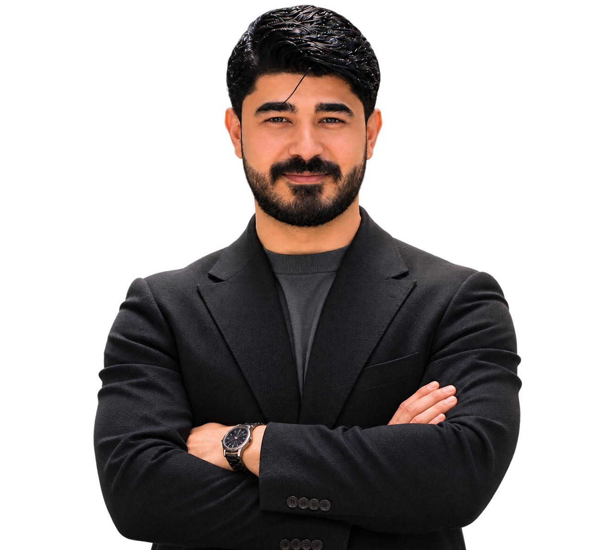
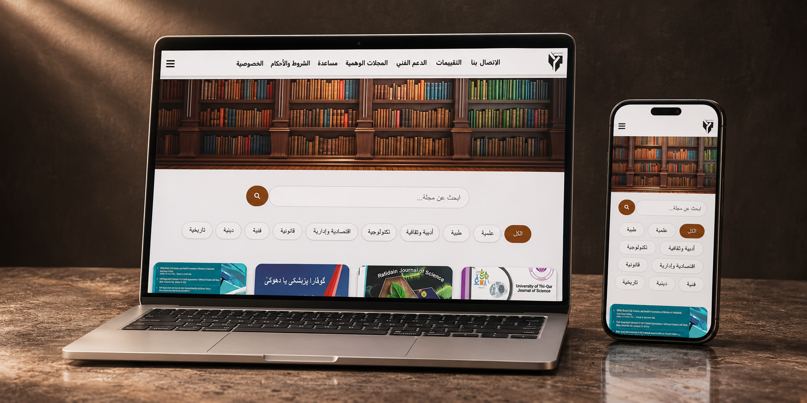
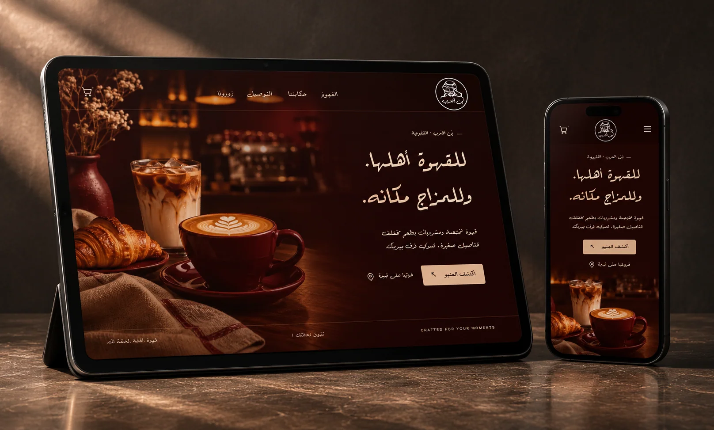
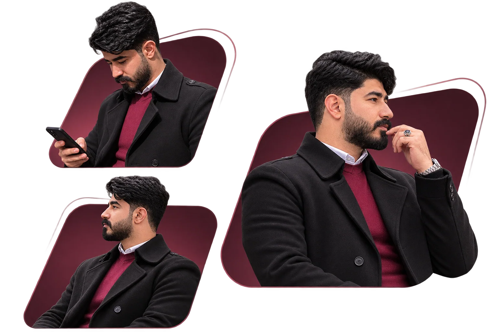

Web applications
Python and Flask applications with clear user flows, forms and role-based workspaces. My academic and learning projects focus on making information easier to manage and use.
PYTHON / FLASK

Web & Application Developer Iraq
Computer Science graduate from Iraq,
building practical web and application solutions.
WHAT I DO
I turn practical needs into web applications and responsive websites, from structured data to the screens people use.
Python and Flask applications with clear user flows, forms and role-based workspaces. My academic and learning projects focus on making information easier to manage and use.
PYTHON / FLASK
Websites that adapt to desktop and mobile screens, with considered typography, strong imagery and straightforward navigation. My cafe and restaurant demos explore this approach.
HTML / CSS / JAVASCRIPT
Database-backed features for questions, academic records and learning activity. I work with SQLite and SQLAlchemy to keep related information organized within an application.
SQLITE / SQLALCHEMY
Layouts, reusable styles and interactive elements that make a design work in the browser. I pay attention to spacing, readable text and the way people move through a page.
LAYOUT / INTERACTION / RESPONSIVE DESIGN
A foundation in TCP/IP, subnetting, routing and switching, VLANs, DHCP and DNS. I practise network configuration and troubleshooting in Cisco Packet Tracer labs.
TCP/IP / ROUTING / SWITCHING / PACKET TRACER
Practical troubleshooting of computer, software and connectivity issues. I approach problems step by step: identify the symptoms, check the basics, test a solution and confirm the result.
TROUBLESHOOTING / CONNECTIVITY / TECHNICAL SUPPORT
Clarify who the project is for and what they need to accomplish.
Organize the content, screens and information before building.
Connect the interface and application behavior into a usable flow.
Check the experience, fix issues and refine the details.
A shared workspace for academic advising, study plans, student records and appointments.
University application
Python / Flask / SQLite
Explore project
A university question bank and practice platform for focused study and revision.
CS50 final project
Python / Flask / SQLite
Explore project
An English-Arabic vocabulary app with daily learning sessions, reviews and progress tracking.
Personal learning application
Python / Flask / SQLite / SQLAlchemy
Explore project
A categorized academic journal index with search and individual journal information.
Graduation project / 2025
HTML / CSS / Basic JavaScript
Explore project
A cafe website and digital-menu demonstration with a warm, recognizable visual identity.
Independent website demo
HTML / CSS / JavaScript
Explore project
A restaurant landing-page and digital-menu concept with bold food-led visuals.
Independent website demo
HTML / CSS / JavaScript
Explore project
An Italian-inspired restaurant website concept built around food, atmosphere and menu discovery.
Independent website demo
HTML / CSS / JavaScript
Explore projectRestaurant websites are independent demo concepts. Device mockups are illustrative presentations of the project interfaces.

A little about me
I build practical web applications with a focus on clear interfaces, organized information and everyday usefulness.
I also have a foundation in computer networks and IT support, with hands-on practice in Cisco Packet Tracer.
ABOUT ME
A Computer Science graduate from Iraq, interested in building things that people can actually use.
I studied Computer Science at the University of Technology in Baghdad, graduating in 2025. My projects bring together web development, application logic and clear visual presentation.
I work with Python and Flask for web applications, SQLite for structured data, and HTML, CSS and JavaScript for the interface. My portfolio includes academic systems, learning platforms and independent website demos.
Alongside web development, I study computer networks and IT support. My skills include TCP/IP, IPv4/IPv6, subnetting, routing and switching, VLANs, DHCP, DNS and troubleshooting, with practice in Cisco Packet Tracer.
I enjoy taking a real need, breaking it into manageable parts and improving the result through practice and feedback.
B.Sc. in Computer Science
University of Technology, Baghdad
2021 - 2025
Cisco Networking Academy
Harvard CS50x
Completed through study and hands-on project work.